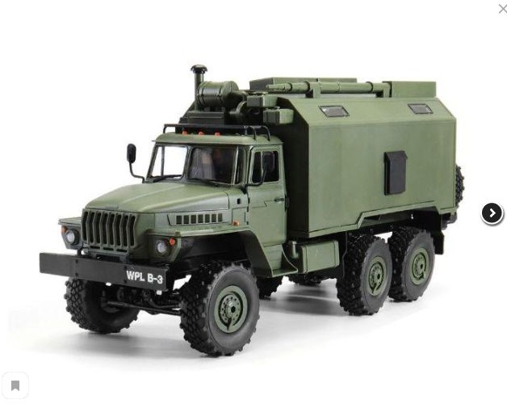

|  |
|
Источник: https://ru.wikipedia.org/wiki/Урал-375Д Урал-375Д — советский и российский грузовой автомобиль повышенной проходимости, производившийся на Уральском автомобильном заводе в Миассе с начала 1960-х годов. Грузовик использовался для транспортировки войск, грузов, а также в качестве шасси для ударного вооружения, как например систем залпового огня «Град», в народном хозяйстве его различные модификации используются до сих пор — как правило, с дизельными двигателями. Всего выпущено 110 000 штук. В советской армии шла постепенная замена Урал-375Д моделью Урал-4320.ХарактеристикиГрузовик оснащался бензиновым двигателем ЗиЛ (Урал)-375 (V8, 7 л, 180 л. с.), системой централизованного изменения давления в шинах (от 0,5 до 3,2 кгс/см²), пятиступенчатой коробкой передач, двухдисковым сцеплением. На автомобилях до 1965 года выпуска устанавливались раздаточные коробки с принудительно подключаемым передним мостом. Рычаг раздаточной коробки имел три положения:передний мост выключен; передний мост включён, межосевой дифференциал заблокирован; передний мост включён, межосевой дифференциал разблокирован. В 1965 году была введена новая раздаточная коробка упрощённой конструкции с постоянно включённым передним мостом и несимметричным блокируемым межосевым дифференциалом планетарного типа. Рулевой механизм с гидроусилителем. Рабочий тормоз — барабанный гидравлический с пневматическим усилителем. Изначальная модификация, Урал-375, имела складную тентовую крышу и плоское лобовое стекло, откидывавшееся на капот. В 1964 году автомобиль получил цельнометаллическую кабину от Урал-377. Модернизированная машина получила индекс Урал-375Д. На части машин в задней части рамы устанавливалась лебёдка с тяговым усилием 7000 кгс. Главным недостатком машины оказался бензиновый двигатель с большим расходом топлива и низким межремонтным ресурсом. Поэтому появившийся в 1977 году дизельный Урал-4320 быстро вытеснил Урал-375Д, который, впрочем, продолжал производиться вплоть до распада СССР. Урал-375Д имел более высокую проходимость по сравнению с Урал-4320. Это связано с отсутствием регулятора частоты вращения, что позволяло регулировать силу тяги на колёсах положением дросселя. Урал-4320 оборудован всережимным регулятором частоты вращения, поэтому при увеличении дорожного сопротивления происходит автоматическое увеличение подачи топлива, что на мягких грунтах приводит к «срыву» мягкого грунта и буксованию. По этой причине там, где пройдёт 375-й, 4320-й мог и не пройти. МодификацииУрал-375 — имел кабину со складным брезентовым тентом. Выпускался с 1961 по 1964 годы. Урал-375Д — имел цельнометаллическую кабину. Выпускался с 1964 года. Урал-375А — шасси с удлинённой рамой для установки кузова-фургона К-375. Урал-375Е — шасси для установки различного оборудования. Урал-375С — седельный тягач. Урал-375К — для эксплуатации в условиях Крайнего Севера. Урал-375Т — серийно не выпускался, прототип для Урала-375Н. Урал-375Н — народнохозяйственный автомобиль. Внешние отличия от Урал-375Д: отсутствовала труба воздухозаборника, кузов — деревянная платформа с тремя открывающимися бортами, колёса без централизованного регулирования давления, размер шин — 1100×400-533, запасное колесо под кузовом (а не между ним и кабиной). ПрименениеУрал-375 применялся, в первую очередь, в вооружённых силах, где на его базе было создано множество комплексов: Батарея системы залпового огня «Град» на шасси Урал-375Д пусковая установка 2Б5 РСЗО 9К51 «Град» автоцистерны АЦ-5-375, АЦ-5,4-375, АЦГ-5-375 топливозаправщик АТМЗ-5-375 автокраны 8Т-200, 8Т-210, 9Т-31 радиолокационная станция П-18 1РЛ131 «Терек» передвижная электростанция ЭД16-Т/230-РАО Автомобиль нашёл применение и в народном хозяйстве, в частности использовался нефтяниками и геологами, кое-где до сих пор эксплуатируется в силу исключительной проходимости. Как правило, в народном хозяйстве бензиновый двигатель ЗИЛ-375 с высоким расходом топлива заменяется более экономичными и мощными дизельными двигателями ЯМЗ-236 и ЯМЗ-238, что значительно улучшает многие показатели автомобиля. |